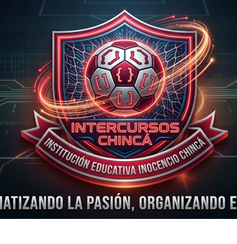

"Automatizando la pasión, organizando el juego."
Danna Sofía Uribe Higuera • Nikol Dayanna Alvarado Montoya • María Ignacia Salón Camargo
¿Qué ocurría en la organización tradicional de los torneos del colegio?
Planillas impresas que se traspapelaban, deterioraban o manchaban durante los descansos, perdiendo el registro de inscripciones y resultados.
Múltiples grados llegaban al mismo tiempo a la misma cancha por falta de un cronograma centralizado e inteligente.
Los alumnos debían buscar al docente de educación física en los pasillos para saber contra quién jugaban y a qué hora.
Dudas constantes en los marcadores oficiales y en la tabla de clasificados a las siguientes rondas eliminatorias.
Una plataforma web moderna, rápida y centralizada con roles diferenciados.
Acceso abierto e inmediato para estudiantes y profesores. Búsqueda por grado, disciplina deportiva y estado de los partidos en vivo.
Panel seguro para el comité deportivo: inscripción de equipos, programación con validación de canchas y registro de marcadores oficiales.
Cobertura integral para Fútbol, Baloncesto, Voleibol, Microfútbol y Atletismo con reglas y canchas asignadas a cada deporte.
Beneficios inmediatos y tangibles para directivos, docentes y alumnos.
Organizar el campeonato toma minutos en lugar de semanas de planeación manual en hojas de cálculo o carteleras.
El sistema valida las 4 sedes deportivas del colegio: Cancha Principal, Cancha Múltiple, Cancha Cubierta y Pista Atlética.
100% web y responsive. Los estudiantes lo consultan desde su celular sin necesidad de descargar ninguna app pesada.
Posiciona al Inocencio Chincá como una institución educativa moderna que impulsa el talento de sus estudiantes de media técnica.
Diseñado para una consulta intuitiva, ágil y atractiva.
Botones de atajo por grado (10°, 11°, 6°, 7°, etc.) para encontrar los compromisos del salón en menos de 2 segundos.
Diferenciación con colores y etiquetas: Programado (hora/cancha), En Juego (en disputa) y Finalizado.
Visualización clara y fidedigna de los resultados aprobados por el comité de arbitraje escolar.
La herramienta definitiva para los profesores y organizadores del torneo.
Registro ordenado por grado y deporte con contador dinámico de equipos participantes.
Formulario con selección de fecha, hora, fase del torneo y asignación estricta de lugar oficial.
Modificación ágil de marcadores y cambio de estado a Finalizado con reflejo automático a los visitantes.
Desarrollo profesional con tecnologías líderes en la industria.
Tipado estricto, detección temprana de errores y renderizado reactivo ultrarrápido sin recargas de página (Single Page App).
Diseño estético con la identidad chinquista (rojo carmesí, dorado y negro) adaptado a móviles y pantallas grandes.
Estructura limpia con separación estricta: AdminView, VisitanteView, InicioView y Context API.
Esquema robusto con integridad referencial y seguridad de datos.
deportes: Catálogo oficial (fútbol, baloncesto, voleibol, microfútbol, atletismo).equipos: Grados inscritos vinculados por clave foránea al deporte.lugares: Canchas oficiales para validación de disponibilidad.partidos: Fechas, horas, equipos enfrentados, marcadores y estados.Los beneficios formativos y culturales del proyecto escolar.
Un torneo ordenado y transparente reduce las discusiones, potencia la sana competencia y une a los grados escolares.
Elimina el desperdicio de cientos de fotocopias, planillas y carteleras descartadas tras cada torneo.
Evidencia el potencial de las estudiantes del grado 11° para aplicar la ingeniería de software a los retos de su entorno.
La plataforma está 100% desarrollada, testeada y lista para dar apertura al próximo campeonato intercursos de la I.E. Inocencio Chincá.
Danna Sofía Uribe • Nikol Dayanna Alvarado • María Ignacia Salón (Grado 1102)